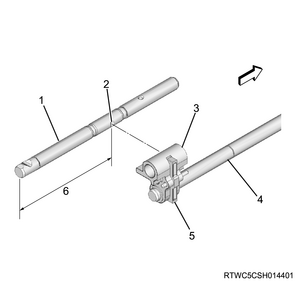

Transmission disassembly (MUX)
1. Transmission cleaning
Note
- Clean the external portion of the unit with solvent.
2. Drain plug removal
1. Remove the drain plug from the rear cover.
Note
- Remove the drain plug and the gasket.
3. Transmission oil drain
1. Drain the transmission oil from the transmission.
4. Front cover removal
1. Remove the front cover from the front case.
5. Quadrant box removal
1. Remove the quadrant box from the rear case.
Note
- Remove the quadrant box and then remove 2 dowel pins.
6. Control unit block removal
1. Remove the control unit block from the control rod.
Note
- Slide the control unit block forward, and remove the taper bolt. And then remove the control unit block.
Caution
- Do not reuse the taper bolt.
7. Reverse switch removal
1. Remove the reverse switch from the front case.
Note
- The connector color of the reverse switch is brown.
8. Neutral switch removal
1. Remove the neutral switch from the rear case.
Note
- The connector color of the neutral switch is brown.
9. Detent assembly removal
1. Remove the detent assembly from the front case and the rear case.
Caution
- Do not reuse the removed detent assembly.
10. Bracket removal
1. Remove the bracket from the transmission.
Note
- Remove the 2 harness brackets.
11. End cover removal
1. Remove the end cover from the rear case.
12. Output shaft rear bearing removal
Note
- Install the transmission assembly.
1. Remove the snap ring from the output shaft.
2. Remove the output shaft rear bearing from the output shaft.
Note
- Remove the output shaft rear bearing inner race.
- Snap ring
- Output shaft rear bearing inner race
13. Rear case removal
1. Remove the rear case from the front case.
2. Remove the magnet from the intermediate plate.
- Rear case
- Magnet
14. Intermediate plate removal
1. Remove the intermediate plate from the front case.
Note
- Wrap the input shaft end with adhesive tape so as not to damage the lip section of the oil seal.

- Intermediate plate
Note
- Remove the adhesive tape from the input shaft edge.
15. Gutter removal
1. Remove the gutter from the intermediate plate.
Note
- Remove the front and rear gutters.
- Remove the 2nd and 5th counter gutters.
Caution
- Do not reuse the front and rear gutters.

- Front gutter
- 5th counter gutter
- Rear gutter
- 2nd counter gutter
16. Shift rod bracket removal
1. Remove the shift rod bracket from the intermediate plate.

- Shift rod bracket
17. Shift and select rod assembly removal
1. Remove the shift and select rod assembly from the intermediate plate.

- Shift and select rod assembly
18. Control rod assembly removal
1. Remove the control rod assembly from the intermediate plate.

- Control rod assembly
19. 1st - 2nd shift rod removal
1. Remove the spring pin from the 1st - 2nd shift rod using a spring pin remover.
2. Remove the 1st - 2nd shift rod from the intermediate plate.
Note
- Remove the 1st - 2nd shift rod together with the 1st - 2nd shift block as a unit.

- 1st - 2nd shift arm
- 1st - 2nd shift rod
- 1st - 2nd shift block
20. 1st - 2nd shift arm removal
1. Remove the 1st - 2nd shift arm from the sleeve.
21. Reverse shift rod removal
1. Remove the spring pin from the reverse shift arm using a spring pin remover.
2. Remove the snap ring from the reverse shift rod.

- Snap ring
Note
- Insert the shift block lever into the shift rod grooves of the 3rd, 4th, and 5th shift rods.

- 3rd - 4th - 5th shift rod
- Shift rod groove
- 5th reverse shift block
- Reverse shift rod
- Shift block lever
- 123.5 mm {4.86 in}
3. Remove the reverse shift rod from the intermediate plate.
22. Reverse shift arm removal
1. Remove the reverse shift arm from the sleeve.
23. 3rd - 4th and 5th shift rod removal
1. Remove the spring pin from the 3rd - 4th shift arm using a spring pin remover.
2. Remove the spring pin from the 5th shift arm using a spring pin remover.
3. Remove the snap ring from the 3rd - 4th and 5th shift rod.

- Snap ring
4. Remove the 3rd - 4th and 5th shift rod from the intermediate plate.
24. 5th shift arm removal
1. Remove the 5th shift arm from the 3rd - 4th and 5th shift rod.
25. 5th - reverse shift block removal
1. Remove the 5th reverse shift block from the 3rd - 4th and 5th shift rod.
26. 3rd - 4th shift arm removal
1. Remove the 3rd - 4th shift arm from the 3rd - 4th and 5th shift rod.
27. Output shaft removal
1. Remove the output shaft from the input shaft.
28. Output counter gear removal
1. Remove the snap ring from the counter shaft assembly.
- Snap ring
2. Remove the output counter gear from the counter shaft assembly.
29. Pilot bearing removal
1. Remove the pilot bearing from the input shaft.
30. Pilot bearing spacer removal
1. Remove the pilot bearing spacer from the input shaft.
31. 3rd - 4th block ring removal
1. Remove the 3rd - 4th block ring from the 3rd - 4th synchronizer assembly.
Note
- Remove the block ring at the output shaft side.
32. Plate spring removal
1. Remove the plate spring from the 3rd - 4th synchronizer assembly.
33. 3rd - 4th synchronizer assembly removal
1. Remove the snap ring from the input shaft using a snap ring pliers.

- Snap ring
2. Remove the 3rd - 4th synchronizer assembly from the input shaft.
3. Remove the 3rd - 4th block ring from the input shaft.
34. 3rd gear removal
1. Remove the 3rd gear from the input shaft.
2. Remove the needle bearing from the input shaft.
35. 3rd counter gear removal
1. Remove the 3rd counter gear from the counter shaft.
36. 5th counter gear removal
1. Remove the 5th counter gear from the counter shaft.
37. Counter shaft assembly removal
1. Remove the counter shaft assembly from the intermediate plate.
2. Remove the counter middle roller bearing from the counter shaft.
Note
- Remove the counter middle roller bearing outer race.
38. 5th synchronizer assembly removal
1. Remove the snap ring from the input shaft using a snap ring pliers.

- Snap ring
2. Remove the 5th synchronizer assembly from the input shaft.
39. 5th block ring removal
1. Remove the 5th block ring from the 5th gear.
40. 5th gear removal
1. Remove the 5th gear from the input shaft.
2. Remove the needle bearing from the input shaft.
Note
- Remove the two-piece type needle bearings.
41. Snap ring removal
1. Remove the snap ring from the intermediate plate using a snap ring pliers.
Note
- Hold the snap ring in an open condition with the snap ring pliers, and slide the input shaft case toward the front case side to take out the snap ring.